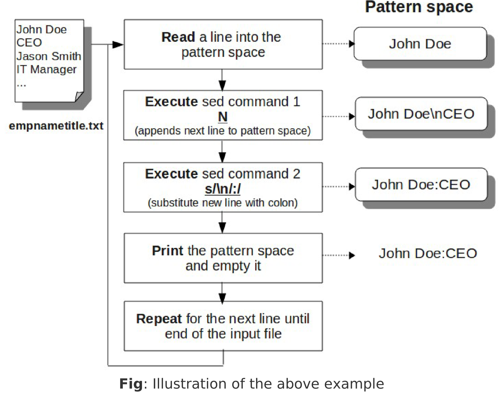
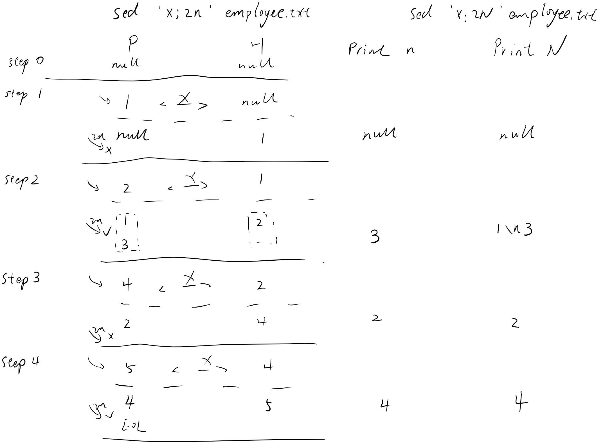

Chapter 7. Sed Multi-Line Commands and loops
sed多行命令和循环，默认情况下sed命令是单行处理
Append Next Line to Pattern Space (N command)
添加下一行到P空间

将回车替换成\n写入一行
在同一行输出行号
- sed = employee.txt |sed '{N;s/\n/ /g}'
-
- 1 101,John Doe,CEO
- 2 102,Jason Smith,IT Manager
- 3 103,Raj Reddy,Sysadmin
- 4 104,anand Ram,Developer
- 5 105,Jane Miller,Sales Manager
n与N；2n与2N差异化研究
下面例子显示结果是在第2N遍执行sed-command里面的2N命令；在第N遍则不执行
推论：如为3N则第3N遍执行.(即为执行第i 的倍数的时候执行)
- sed -n '{x;2N;s/\n/:/;p;G;s/\n/::/;p}' employee.txt
-
- ::101,John Doe,CEO
- 101,John Doe,CEO:103,Raj Reddy,Sysadmin
- 101,John Doe,CEO:103,Raj Reddy,Sysadmin ::102,Jason Smith,IT Manager
- 102,Jason Smith,IT Manager
- 102,Jason Smith,IT Manager ::104,anand Ram,Developer
- 104,anand Ram,Developer
- 104,anand Ram,Developer::105,Jane Miller,Sales Manager
而n参数是输出最后一行
- sed -n '{x;2n;s/\n/:/;p;G;s/\n/::/;p}' employee.txt
-
- ::101,John Doe,CEO
- 103,Raj Reddy,Sysadmin
- 103,Raj Reddy,Sysadmin ::102,Jason Smith,IT Manager
- 102,Jason Smith,IT Manager
- 102,Jason Smith,IT Manager ::104,anand Ram,Developer
- 104,anand Ram,Developer
- 104,anand Ram,Developer::105,Jane Miller,Sales Manager
步骤分析

Print 1st Line in MultiLine (P command)
输出多行的第一行。
P命令为输出模式空间，直到遇到一个\n符号，
所以如果模式空间里有多个\n换行符（比如有个N命令），则只输出第一行。
Delete 1st Line in MultiLine (D command)
删除多行的第一行
循环和分支（命令b 和:label 标签）
使用标签和分支命令b ， 可以改变sed 的执行流程：
- :label 定义一个标签；
- b label 执行标签后面的命令。sed 会跳转到该标签，然后执行后面的命令；
- 注意：命令b 后面可以不跟任何标签，这种情况下，他会直接跳到sed 脚本的结尾
例：
- $cat label.sed
- #!/bin/sed -nf
- h;n;H;x
- s/\n/:/
- /Manager/!b end
- s/^/*/
- :end
- p
执行结果
- $ ./label.sed empnametitle.txt
- John Doe:CEO
- *Jason Smith:IT Manager
- Raj Reddy:Sysadmin
- Anand Ram:Developer
- *Jane Miller:Sales Manager
h;n;H;x 可以使用N 代替，这样就不用使用保持空间了；如果不使用标签，可以用：
sed 'N;s/\n/:/;/Manager/s/^/\*/' empnametitle.txt
使用命令t 进行循环
命令t的作用：如果前面的命令执行成功，那么就跳转到t指定的标签粗，继续往下执行后续命令。否则，仍然
继续正常的执行流程。
例
- $ cat label-t.sed
- #!/bin/sed -nf
- h;n;H;x
- s/\n/:/
- :repeat
- /Manager/s/^/*/
- /\*\*\*/!t repeat
-
- p
-
- $ chmod u+x label-t.sed
- $ ./label-t.sed empnametitle.txt
- John Doe:CEO
- ***Jason Smith:IT Manager
- Raj Reddy:Sysadmin
- Anand Ram:Developer
- ***Jane Miller:Sales Manager
详解:
- 下面的代码执行循环
- :repeat
- /Manager/s/^/*/
- /\*\*\*/!t repeat
- /Manager/s/^/*/ 如果匹配到Manager，在行首加上星号*
- /\*\*\*/!t repeat 如果没有匹配到三个连续的星号*,并且前面一行的替换命令成功执行了，
则跳转到名为repeat 的标签处（即 t repeat）
- :repeat 标签